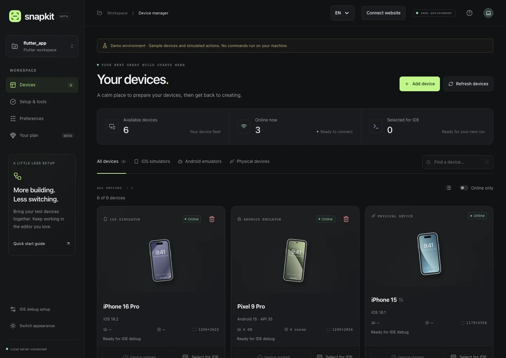

Cả bộ thiết bị, trong tầm mắt.
Xem Simulator, Emulator và điện thoại thật cùng một chỗ. Lọc theo nền tảng, tìm nhanh tên máy và biết thiết bị nào đang sẵn sàng.
QUẢN LÝ THIẾT BỊChuẩn bị thiết bị trong vài thao tác.
Tập trung làm nên ứng dụng tiếp theo của bạn.
macOS & Windows · Beta miễn phí · Không cần tài khoản

ÍT THAO TÁC HƠN. NHIỀU Ý TƯỞNG HƠN.
Những việc nhỏ lặp lại mỗi ngày,
giờ có một nơi để giải quyết.
Xem Simulator, Emulator và điện thoại thật cùng một chỗ. Lọc theo nền tảng, tìm nhanh tên máy và biết thiết bị nào đang sẵn sàng.
QUẢN LÝ THIẾT BỊTạo thiết bị giả lập theo model và phiên bản hệ điều hành tương thích với công cụ đã cài. Bật thiết bị ngay từ Snapkit.
TẠO & KHỞI ĐỘNGChọn nhiều thiết bị cho Flutter và bắt đầu Debug từ editor tương thích có Snapkit Debug Sync. Tiếp tục dùng Hot Reload và DevTools quen thuộc.
FLUTTER DEBUG SYNCKiểm tra Flutter, Android SDK và công cụ iOS. Xem phần đã sẵn sàng, phần còn thiếu và hướng dẫn thiết lập ngay trong ứng dụng.
HƯỚNG DẪN THIẾT LẬPDÀNH CHO CÁCH BẠN LÀM VIỆC
Chuẩn bị iPhone, Pixel và tablet để kiểm tra giao diện. Đồng bộ lựa chọn debug với VS Code qua extension; Cursor và Antigravity đang ở mức beta.
Dùng Snapkit để tạo và bật thiết bị, rồi chạy app bằng công cụ của bạn. Beta chưa tích hợp Metro hoặc debug cho React Native.
Sắp xếp các kích thước màn hình và phiên bản OS cần kiểm tra. Xem trạng thái, tìm và mở thiết bị mà không phải nhớ câu lệnh.
Dùng cùng editor bạn yêu thích: VS CodeCursorAntigravityAndroid StudioIntelliJ
Quản lý thiết bị dùng cùng mọi editor. Group debug hiện dành cho các editor VS Code tương thích có Snapkit Debug Sync.
BẮT ĐẦU THẬT NHẸ NHÀNG
Snapkit đi cùng bạn từ lần mở đầu tiên.
Chọn bộ cài phù hợp với máy Mac hoặc Windows của bạn.
Ứng dụng tìm SDK đã có và hướng dẫn phần cần cài thêm.
Chọn thiết bị bạn cần, tiếp tục build trong editor quen thuộc.
Tải Snapkit cho máy của bạn. Tất cả tính năng hiện có đều miễn phí trong beta.
macOS 13 trở lên · Android & iOS Simulator
iOS Simulator cần cài Xcode riêng.
Dành cho máy Intel / AMD 64-bit.
Android Emulator & điện thoại Android.
Bản beta 0.2.0-beta.5 · Chọn bộ cài phù hợp với máy của bạn.
Bản thử nghiệm chưa ký số. macOS có thể chặn mở bộ cài hiện tại; xem hướng dẫn cài beta trước khi tải.
TRƯỚC KHI BẠN BẮT ĐẦU
Có. Tất cả tính năng hiện có, bao gồm các tính năng dự kiến thuộc Pro, đều miễn phí trong beta. Không cần thẻ và không tự chuyển sang trả phí. Giá và giới hạn sẽ được thông báo trước khi mở bán.
Snapkit không yêu cầu cài Node.js. Bạn vẫn cần Flutter và các SDK phù hợp cho công việc của mình. iOS Simulator cần macOS cùng Xcode; Android cần Android SDK và Emulator. Mục Kiểm tra công cụ trong app giúp bạn biết còn thiếu gì.
Project và cấu hình thiết bị được xử lý trên máy bạn. Snapkit không tải source code hay file defines lên server. Kết nối online được dùng để kiểm tra phiên bản và tải các thành phần cần thiết khi bạn yêu cầu.
Bản beta macOS đã ký tạm nhưng chưa có Developer ID và notarization của Apple. Chép Snapkit vào thư mục Applications có quyền ghi, rồi thử Cài đặt hệ thống → Quyền riêng tư & Bảo mật → Vẫn mở. macOS vẫn có thể yêu cầu xử lý quyền mở cho bản test đã tải về. Nếu máy yêu cầu ứng dụng được Apple xác minh, hãy chờ bản phát hành có chứng chỉ. Windows cũng có thể cảnh báo nhà phát hành chưa xác minh.
Snapkit chuẩn bị và quản lý thiết bị. IDE tiếp tục quản lý build, debug, logs và Hot Reload. Đồng bộ nhiều thiết bị Flutter cần Snapkit Debug Sync trong editor tương thích.
MORE BUILDING. LESS SWITCHING.